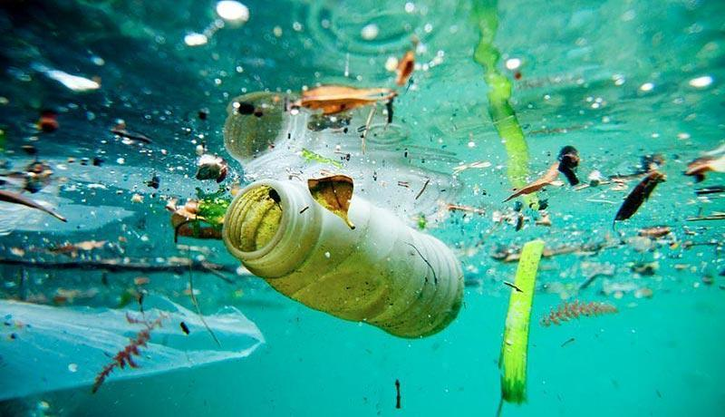
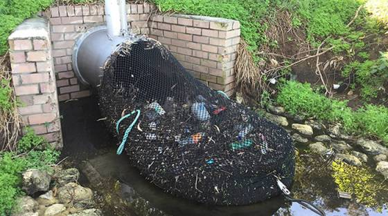

A felszíni vizeink romlását sikerült az utóbbi időben csökkenteni, ami elsősorban annak köszönhető, hogy a kibocsátott szennyező anyagok többségének mennyisége kis mértékben csökkent, az összes oldott anyag mennyisége viszont változatlanul magas. A szennyvizek kezelés nélküli befogadóba vezetése igen nagy terhelést jelent a környezet számára. A szennyezett vizek összegyűjtésével kezelésével, majd visszabocsátásával az édesvíz készleteink tisztántartásához járulunk hozzá. A befogadók valamint a környezetvédelem, ezen belül is a vízkészleteink mennyiségének és minőségének megóvása szempontjából lényeges, hogy milyen minőségű vizet vezetünk vissza a környezetbe.
A tisztulási, tisztítási folyamat ugyan a különböző mikroorganizmusok hatására a természetben is lezajlik (azonban általában jóval hosszabb idő alatt, és alacsonyabb hatékonysággal, miközben a környezetszennyezés folyamatos lehet), azok szerves anyag-lebontó képességének köszönhetően. A lebontó folyamat során azonban a mikroorganizmusok igen jelentős mennyiségű oxigént használnak fel, illetve vonnak el a vízből. A megfelelő mennyiségű oxigén jelenléte pedig a halak, és egyéb vízi élőlények számára létszükséglet.Tehát a szennyvízben található szerves anyagoknak azelőtt kell lebomlania, mielőtt az elérné a természetes környezetet, élőhelyeket. A különböző szennyvíztisztítási és -kezelési megoldásokkal a szennyvízben lévő szerves anyagokat, ún. nitrogénformákat, foszforformákat és egyéb beépülő anyagokat (legalábbis ezek döntő hányadát) tudjuk eltávolítani. Ezek mellett a potenciálisan mérgező anyagok és organizmusok, mint baktériumok, vírusok, férgek és vegyi anyagok ártalmatlanítása történik a folyamat során.
